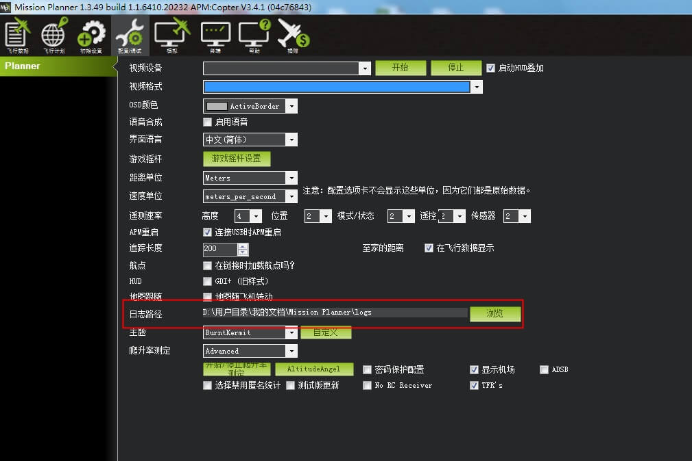
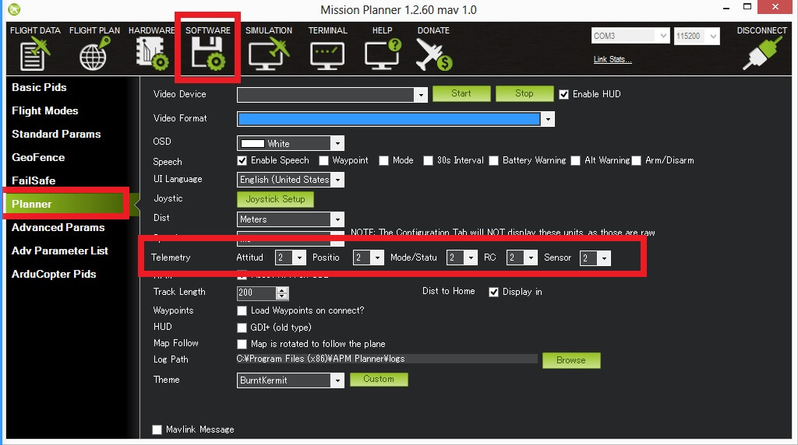
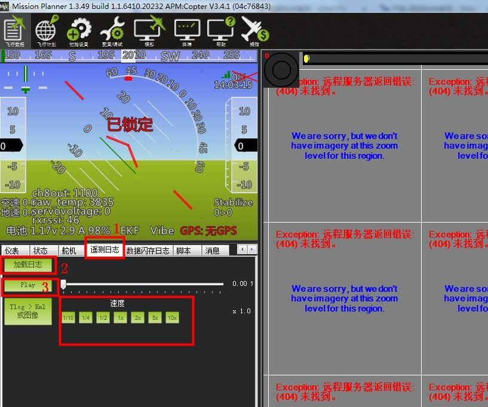
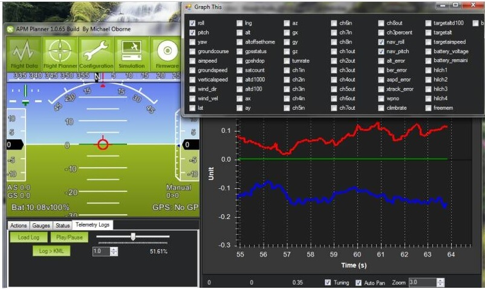
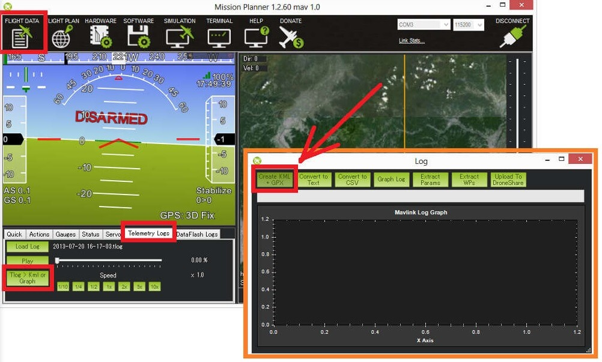
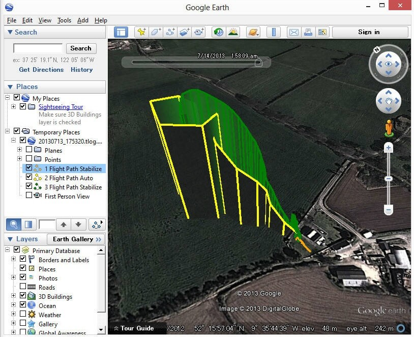
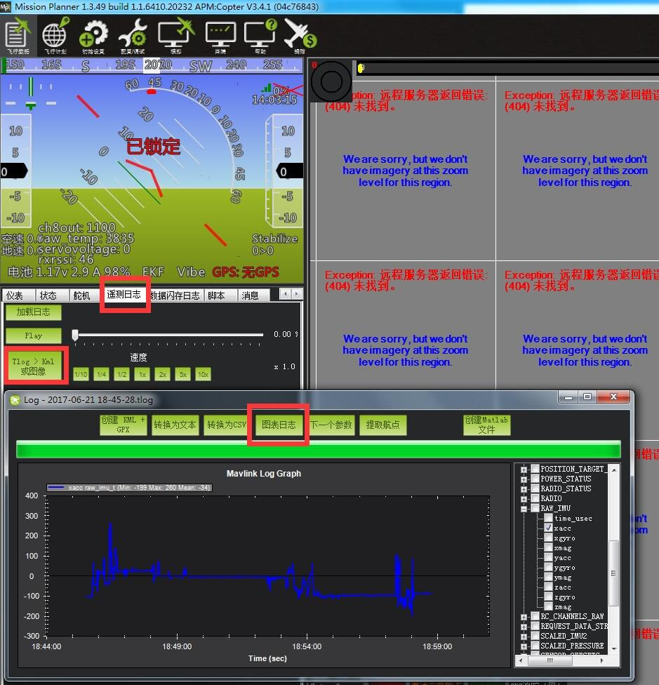

地面站遥测日志分析
地面站遥测日志（也称为“tlogs”），当你的飞行器链接上地面站的时候，由地面站自动记录的日志
本章节主要介绍如何配置和访问分析遥测日志。
Tlog是在APM / PX4和地面站之间发送的MAVLink遥测消息的记录，并且在您按mp地面站上的连接按钮的时刻自动创建。 格式为YYYY-MM-DD hh-mm-ss.tlog，存储在mp安装文件夹中的“日志”子文件夹中，可以在mp地面站选[配置/调试]界面 [planner]中选择存储位置。
除了“.tlog”文件之外，还创建了“.rlog”文件。 这些包含所有.tlog数据以及来自任务规划者的附加调试输出。 但不能被解析或播放，所以应该被忽略。
设置遥测速率
数据从APM / PX发送到地面站的期望速率可以通过mp地面站>配置/调试>planner界面下的遥测速率下拉列表进行控制。 因为通过遥测链路发送的所有数据也记录在tlog中，所以这也控制了保存到tlog的数据速率。
需要注意的是，由于CPU资源的限制，尤其对于直升机，发送和保存的数据的实际速率可能会低于所请求的速率。

播放任务
如果您正在使用无线遥测并通过任务规划人员连接到APM，您的飞行数据将自动记录。 您可以通过执行以下操作来播放这些日志：
打开mp的飞行数据屏幕
单击遥测日志选项卡
按“加载日志”，找到飞行的tlog文件
并打开按“play”

您还可以使用滑动进度条跳转到日志中的任意时间点，并使用预定义的“速度”按钮控制播放速度。
当日志重播时，HUD界面将移动，并且地图上的飞行器位置将按照飞行中的时间进行更新。 通过“状态”选项卡可以看到单个数据值，甚至可以通过点击地图下方的“调试”复选框，将它们显示在图形中，然后双击数据图例，打开一个框，从中可以精确地选择哪个 数据字段如下图所示。 这将显示记录的数据随着飞行任务的进行而改变。

创建飞行路径的3D图像
您可以通过以下操作创建KMZ文件：
打开mp的飞行数据屏幕
单击遥测日志选项卡
按“Tlog> Kml或Graph”按钮
按“创建KML + GPX”按钮
选择飞行tlog
一个.kmz和.kml文件将沿着原始的.tlog一边创建，这可以在google地球上打开，交互地查看3D飞行路径。 您可以打开Google Earth中的kmz文件来查看航班或路径。 只需双击该文件或拖动它并放入Google Earth。
- 飞行期间使用的不同飞行模式将显示为不同的彩色轨迹。 您可以更改有关飞行路径显示方式的详细信息，包括其颜色以及路径是否延伸到地面：
在左侧的“位置”窗格中查找日志文件的名称。 它应该出现在“临时位置”文件夹中。
右键单击单个路径，然后选择“属性”以打开“编辑路径”窗口。
颜色可以在“样式，颜色”选项卡上更改通过取消检查（检查）“扩展到地面的路径”，可以在“高度”选项卡上删除（添加）路径下的区域
提取参数和Waypoint
您可以按照与创建KML文件相同的步骤从tlog中提取参数和路点，但最后一步选择“Extract Params”或“Extract WPs”。
Extract Params将导致在.log文件旁创建一个.param文件。 此文件是分隔符，包含参数的完整列表（与eeprom中显示的顺序相同）及其在飞行过程中的值。 这可以在excel或文本编辑器中打开。
提取WP将创建一个或多个.txt文件，其中包含上传到APM / PX4的任务。 可以通过切换到飞行计划屏幕，右键单击地图并选择“文件加载/保存”，“加载WP文件”，在任务计划器中打开这些文件
从飞行中绘制数据
可以通过执行以下操作来绘制飞行中的数据：
打开任务计划员的飞行数据屏幕
单击遥测日志选项卡
按“Tlog> Kml或Graph”按钮
按““Graph Log””按钮
选择飞行tlog
当出现“Graph This”屏幕时，使用左或右鼠标按钮单击要显示的项目旁边的复选框。这些项目分组为“RC_CHANNELS”和“RAW_IMU”等类别 ，可打开对应的分组找到想要的栏目。
如果您使用鼠标左键，该项目的比例尺将显示在图表的左侧。 如果您使用鼠标右键，它将显示在右侧
多次点击复选框，循环显示所有可能的颜色
使用鼠标的中间轮更改图形的缩放，通过按住鼠标左键选择图形区域，或者通过鼠标右键单击图形并选择“将缩放到默认值”